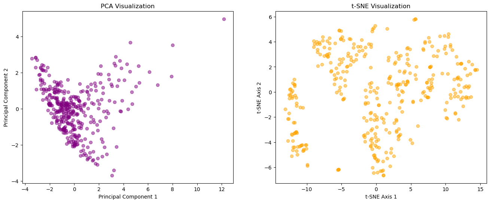
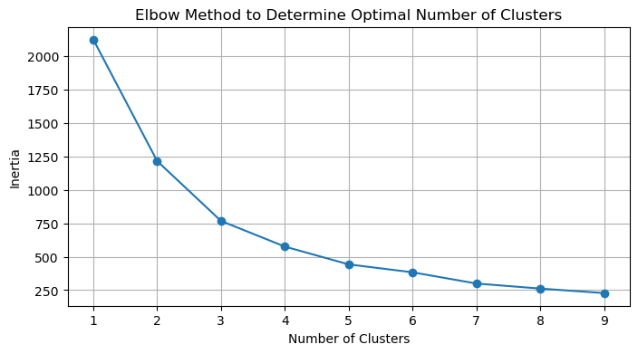
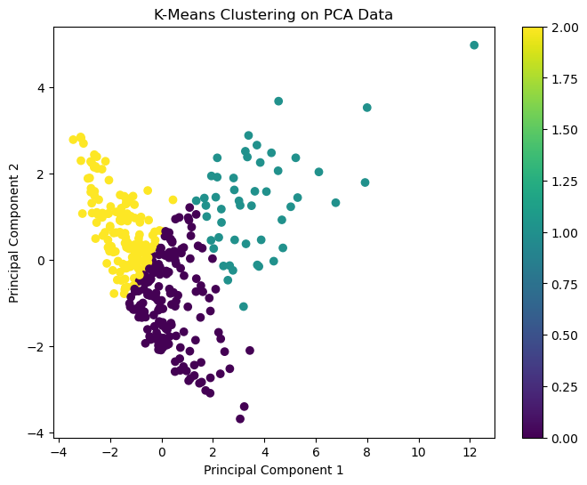
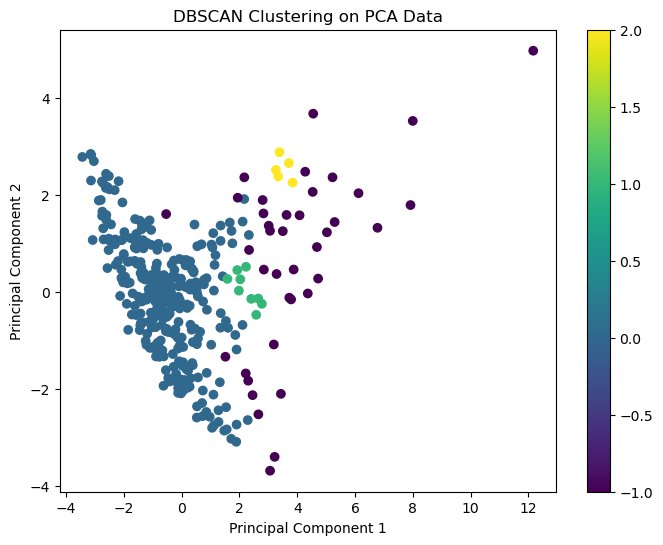
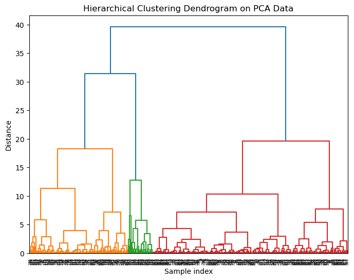
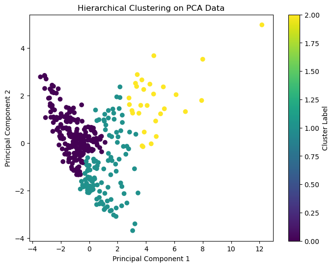
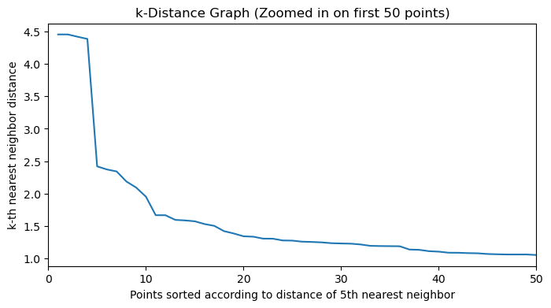
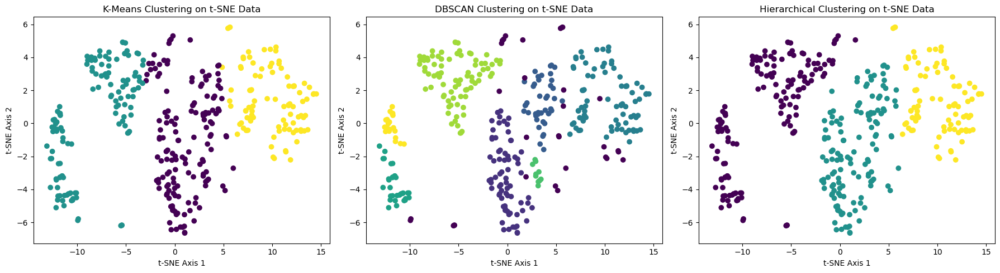
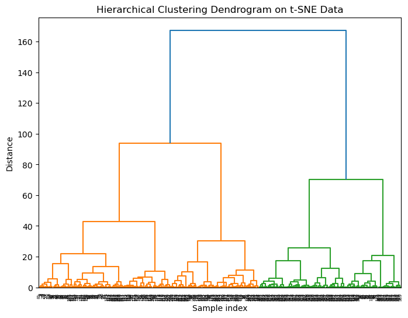

import pandas as pd
from sklearn.decomposition import PCA
from sklearn.manifold import TSNE
import matplotlib.pyplot as plt
from sklearn.preprocessing import StandardScaler
# Load the dataset
df = pd.read_csv('../../data/processed-data/Normalized_Data_with_Sentiments.csv')
# Specify the feature columns
features = [
'Days Since Published', 'View Count', 'Like Count', 'Comment Count',
'Subscriber Count', 'Definition', 'Mean Sentiment Score',
'Duration_seconds', 'genre_label', 'singer_followers', 'singer_popularity'
]
# Ensure the target column 'popularity' exists in DataFrame
if 'Popularity' not in df.columns:
raise ValueError("The 'popularity' column is missing from the DataFrame.")
# Split into input (X) and target (y)
X = df[features] # Inputs
y = df['Popularity'] # Target
# Applying PCA
pca = PCA(n_components=3) # Reduce to 3 dimensions for visualization
X_pca = pca.fit_transform(X)
# How much variance was retained?
print("Explained Variance Ratio:", pca.explained_variance_ratio_)
print("Total Variance Explained:", sum(pca.explained_variance_ratio_))
From the plot, we can observe perplexities=50 has a better performance so we chose it as the parameter for dimension reduction.
Evaluation and Comparison: PCA vs. t-SNE
Effectiveness in Preserving Data Structure
PCA: The PCA visualization shows a somewhat linear distribution of the data points, focusing on the major directions of data variance. It effectively captures the global structure of the data, emphasizing the spread along the directions of highest variance.
t-SNE: In contrast, the t-SNE visualization exhibits a more scattered and differentiated structure with distinct clusters. This indicates t-SNE’s superior capability in capturing local structures within the data, potentially revealing intrinsic patterns that PCA might overlook.
Visualization Capabilities
PCA: Provides a simplified overview, projecting the data into lower dimensions while trying to preserve the variance. It’s effective for quick explorations of the data to identify gross underlying patterns but might miss finer details.
t-SNE: Produces more visually distinct clusters, making it easier to identify groups and patterns within the data. This makes t-SNE a better tool for tasks requiring detailed pattern recognition and cluster analysis.
Trade-offs and Scenarios
PCA:
Pros: Less computationally intensive, suitable for larger datasets, provides a quick overview.
Cons: Might miss non-linear relationships between features.
Best for: Preliminary data analysis, reducing dimensionality for linear data, or when computational resources are limited.
t-SNE:
Pros: Captures complex non-linear relationships, excellent for identifying clusters and local patterns.
Cons: Computationally expensive, sensitive to parameter settings (like perplexity), not suitable for very large datasets.
Best for: Detailed exploratory data analysis, when clusters or local patterns within the data are of interest, and computational resources are adequate.
For the data given, t-SNE has the better performance for dimentionality reduction and for future classification task.
Clustering Methods
In this part of the analysis, three clustering techniques—K-Means, DBSCAN, and Hierarchical Clustering—were applied to the dataset that was preprocessed using PCA and t-SNE for dimensionality reduction. This approach allows us to compare how each clustering method performs on data transformed by these techniques, offering insights into their different use cases and effectiveness.
K-Means Clustering
K-Means clustering was applied to both PCA and t-SNE processed data. The algorithm partitions the data into K mutually exclusive clusters by assigning each data point to the cluster with the nearest mean. This method is effective in producing spherical clusters where the centroid represents the mean of the cluster’s points. The number of clusters, K, was set to 3 based on domain knowledge and preliminary analysis.
DBSCAN
DBSCAN (Density-Based Spatial Clustering of Applications with Noise) was utilized to identify arbitrarily shaped clusters based on density. It categorizes data points into clusters when they are closely packed together, while points in low-density areas are labeled as noise. This method is particularly effective for data with noise and outliers.
Hierarchical Clustering
Hierarchical clustering was performed using the Ward method, which minimizes the total within-cluster variance. At each step, the pair of clusters with the minimum between-cluster distance are merged. This method is well-suited for identifying hierarchical relationships between clusters.
Results Section
Visualizing Cluster Results
The clustering results from K-Means, DBSCAN, and Hierarchical clustering were visualized using scatter plots, clearly labeled with clusters identified from PCA and t-SNE processed data. Each visualization helps in understanding the cluster distribution and separation.
K-Means with n_clusters=3 segmented the data into three distinct groups. The clusters are relatively well-separated with slight overlap, indicating a clear grouping pattern in the dataset.
DBSCAN Clustering:
DBSCAN with eps=1 and min_samples=5 identified varying densities within the dataset. This method has successfully differentiated the dense core groups from sparser outliers, which are not included in any cluster and are labeled as noise. But there is overlap between different groups.
Hierarchical Clustering:
Hierarchical clustering revealed three main clusters, with results similar to K-Means but differing slightly in the cluster boundaries.
Performance Comparison
Silhouette Scores:
K-Means achieved the highest Silhouette Score of 0.463882, suggesting a good level of separation and cohesion within clusters.
Hierarchical Clustering followed closely with a Silhouette Score of 0.456777.
DBSCAN had a lower Silhouette Score of 0.3538208, indicating more overlap or less distinct clustering compared to the other methods.
So K-Means has the best performance on the t-sne processed dataset.
Conclusion
From the visualization, we can see there is chance for the dataset to be classified into groups, indicating there may be differences beween different songs for their popularity according to our features given. And in the future this can be used for popularity forecast.
Code
import pandas as pdfrom sklearn.decomposition import PCAfrom sklearn.manifold import TSNEimport matplotlib.pyplot as pltfrom sklearn.preprocessing import StandardScaler# Load the datasetdf = pd.read_csv('../../data/processed-data/Normalized_Data_with_Sentiments.csv')# Specify the feature columnsfeatures = ['Days Since Published', 'View Count', 'Like Count', 'Comment Count','Subscriber Count', 'Definition', 'Mean Sentiment Score','Duration_seconds', 'genre_label', 'singer_followers', 'singer_popularity']# Ensure the target column 'popularity' exists in DataFrameif'Popularity'notin df.columns:raiseValueError("The 'popularity' column is missing from the DataFrame.")# Split into input (X) and target (y)X = df[features] # Inputsy = df['Popularity'] # Target# Applying PCApca = PCA(n_components=3) # Reduce to 4 dimensions for visualizationX_pca = pca.fit_transform(X)# How much variance was retained?print("Explained Variance Ratio:", pca.explained_variance_ratio_)print("Total Variance Explained:", sum(pca.explained_variance_ratio_))
Explained Variance Ratio: [0.35411601 0.1606999 0.12194563]
Total Variance Explained: 0.6367615347014879
Explained Variance Ratio: [0.35411601 0.1606999 ]
Total Variance Explained by 2 PCs: 0.5148159010329216

from sklearn.cluster import KMeansimport matplotlib.pyplot as plt# Applying K-Means to PCA datakmeans_pca = KMeans(n_clusters=3, random_state=42)kmeans_pca.fit(X_pca)# Visualizing the PCA clustersplt.figure(figsize=(8, 6))plt.scatter(X_pca[:, 0], X_pca[:, 1], c=kmeans_pca.labels_, cmap='viridis')plt.title('K-Means Clustering on PCA Data')plt.xlabel('Principal Component 1')plt.ylabel('Principal Component 2')plt.colorbar()plt.show()
from sklearn.cluster import KMeansimport matplotlib.pyplot as plt# Data for applying the Elbow methodinertias = []cluster_range =range(1, 10) # Test 1 to 9 clustersfor k in cluster_range: kmeans = KMeans(n_clusters=k, random_state=42) kmeans.fit(X_pca) inertias.append(kmeans.inertia_)# Plotting the Elbow graphplt.figure(figsize=(8, 4))plt.plot(cluster_range, inertias, marker='o')plt.title('Elbow Method to Determine Optimal Number of Clusters')plt.xlabel('Number of Clusters')plt.ylabel('Inertia')plt.xticks(cluster_range)plt.grid(True)plt.show()# Applying K-Means to PCA datakmeans_pca = KMeans(n_clusters=3, random_state=42)kmeans_pca.fit(X_pca)# Visualizing the PCA clustersplt.figure(figsize=(8, 6))plt.scatter(X_pca[:, 0], X_pca[:, 1], c=kmeans_pca.labels_, cmap='viridis')plt.title('K-Means Clustering on PCA Data')plt.xlabel('Principal Component 1')plt.ylabel('Principal Component 2')plt.colorbar()plt.show()


from sklearn.cluster import DBSCAN# Applying DBSCAN to PCA datadbscan_pca = DBSCAN(eps=0.5, min_samples=5)clusters_pca = dbscan_pca.fit_predict(X_pca)# Visualizing the PCA clustersplt.figure(figsize=(8, 6))plt.scatter(X_pca[:, 0], X_pca[:, 1], c=clusters_pca, cmap='viridis')plt.title('DBSCAN Clustering on PCA Data')plt.xlabel('Principal Component 1')plt.ylabel('Principal Component 2')plt.colorbar()plt.show()

from scipy.cluster.hierarchy import dendrogram, linkage# Applying Hierarchical Clustering to PCA datalinked_pca = linkage(X_pca, method='ward')# Plotting the dendrogram for PCA dataplt.figure(figsize=(8, 6))dendrogram(linked_pca, orientation='top', distance_sort='descending', show_leaf_counts=True)plt.title('Hierarchical Clustering Dendrogram on PCA Data')plt.xlabel('Sample index')plt.ylabel('Distance')plt.show()from sklearn.cluster import AgglomerativeClustering# Applying Hierarchical Clustering with 3 clustershc_model = AgglomerativeClustering(n_clusters=3, linkage='ward')clusters_pca = hc_model.fit_predict(X_pca)# Plotting the scatter plot for the clustered dataplt.figure(figsize=(8, 6))plt.scatter(X_pca[:, 0], X_pca[:, 1], c=clusters_pca, cmap='viridis')plt.title('Hierarchical Clustering on PCA Data')plt.xlabel('Principal Component 1')plt.ylabel('Principal Component 2')plt.colorbar(label='Cluster Label')plt.show()


from sklearn.metrics import silhouette_score# Calculate Silhouette Score for K-Meanssilhouette_kmeans = silhouette_score(X_pca, kmeans_pca.labels_)# Print the Silhouette Score for K-Meansprint("Silhouette Score for K-Means:", silhouette_kmeans)silhouette_dbscan = silhouette_score(X_pca, clusters_pca)print("Silhouette Score for DBSCAN:", silhouette_dbscan)# Calculate Silhouette Score for Hierarchical Clusteringsilhouette_hierarchical = silhouette_score(X_pca, clusters_pca)# Print the Silhouette Score for Hierarchical Clusteringprint("Silhouette Score for Hierarchical Clustering:", silhouette_hierarchical)
Silhouette Score for K-Means: 0.38368484495923294
Silhouette Score for DBSCAN: 0.39254202943407834
Silhouette Score for Hierarchical Clustering: 0.39254202943407834
from sklearn.neighbors import NearestNeighborsimport numpy as npimport matplotlib.pyplot as plt# k-distancek =5nbrs = NearestNeighbors(n_neighbors=k).fit(X_tsne)distances, indices = nbrs.kneighbors(X_tsne)# make k-distance plotdistance_dec =sorted(distances[:, k-1], reverse=True)# Re-attempting to plot the k-distance graph zoomed into the first 50 pointsplt.figure(figsize=(8, 4))plt.plot(list(range(1, 51)), distance_dec[:50])plt.xlabel('Points sorted according to distance of '+str(k) +'th nearest neighbor')plt.ylabel('k-th nearest neighbor distance')plt.title('k-Distance Graph (Zoomed in on first 50 points)')plt.xlim(0, 50)plt.show()

import numpy as npfrom sklearn.cluster import KMeans, DBSCANfrom sklearn.cluster import AgglomerativeClusteringimport matplotlib.pyplot as plt# K-Means Clusteringkmeans = KMeans(n_clusters=3, random_state=42)kmeans_tsne = kmeans.fit(X_tsne)kmeans_tsne_labels = kmeans_tsne.labels_# DBSCANdbscan = DBSCAN(eps=1, min_samples=5)dbscan_tsne = dbscan.fit(X_tsne)dbscan_tsne_labels = dbscan_tsne.labels_# Hierarchical Clusteringhierarchical = AgglomerativeClustering(n_clusters=3)hierarchical_tsne = hierarchical.fit(X_tsne)hierarchical_tsne_labels = hierarchical_tsne.labels_# Plotting the resultsfig, axes = plt.subplots(1, 3, figsize=(18, 5))# K-Means Plotaxes[0].scatter(X_tsne[:, 0], X_tsne[:, 1], c=kmeans_tsne_labels, cmap='viridis', marker='o')axes[0].set_title('K-Means Clustering on t-SNE Data')axes[0].set_xlabel('t-SNE Axis 1')axes[0].set_ylabel('t-SNE Axis 2')# DBSCAN Plotaxes[1].scatter(X_tsne[:, 0], X_tsne[:, 1], c=dbscan_tsne_labels, cmap='viridis', marker='o')axes[1].set_title('DBSCAN Clustering on t-SNE Data')axes[1].set_xlabel('t-SNE Axis 1')axes[1].set_ylabel('t-SNE Axis 2')# Hierarchical Plotaxes[2].scatter(X_tsne[:, 0], X_tsne[:, 1], c=hierarchical_tsne_labels, cmap='viridis', marker='o')axes[2].set_title('Hierarchical Clustering on t-SNE Data')axes[2].set_xlabel('t-SNE Axis 1')axes[2].set_ylabel('t-SNE Axis 2')plt.tight_layout()plt.show()# Applying Hierarchical Clustering to t-SNE datalinked_tsne = linkage(X_tsne, method='ward')# Plotting the dendrogram for t-SNE dataplt.figure(figsize=(8, 6))dendrogram(linked_tsne, orientation='top', distance_sort='descending', show_leaf_counts=True)plt.title('Hierarchical Clustering Dendrogram on t-SNE Data')plt.xlabel('Sample index')plt.ylabel('Distance')plt.show()from sklearn.metrics import silhouette_score# Calculate Silhouette Score for K-Meanssilhouette_kmeans = silhouette_score(X_tsne, kmeans_tsne.labels_)# Print the Silhouette Score for K-Meansprint("Silhouette Score for K-Means:", silhouette_kmeans)silhouette_dbscan = silhouette_score(X_tsne, dbscan_tsne_labels)print("Silhouette Score for DBSCAN:", silhouette_dbscan)# Calculate Silhouette Score for Hierarchical Clustering on t-SNE datasilhouette_hierarchical = silhouette_score(X_tsne, hierarchical_tsne_labels)# Print the Silhouette Score for Hierarchical Clustering on t-SNE dataprint("Silhouette Score for Hierarchical Clustering on t-SNE data:", silhouette_hierarchical)


Silhouette Score for K-Means: 0.463882
Silhouette Score for DBSCAN: 0.3538208
Silhouette Score for Hierarchical Clustering on t-SNE data: 0.456777